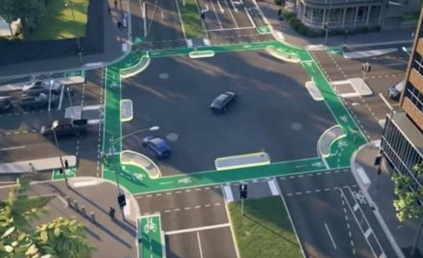
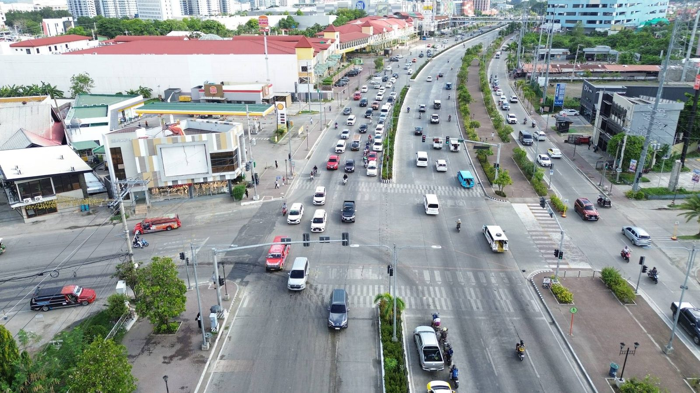

The protected bike intersection from the reference render (photo 1), laid out on your signalised six-lane junction (photo 2). The design is mirrored for right-hand traffic and uses the wide east median park so that no northbound traffic lane is lost.


A hand-placed sketch over the drone photo, not to scale. Use the plan on Sheet 03 for dimensions. Numbers match the key on Sheet 03.
Drawn to scale from widths estimated off the photo. Confirm every dimension with a topographic survey before detailed design.
The same drawing enlarged, with dimensions in metres. The other three corners mirror this one. On the east side the island sits on the park nose, so no bend-out is needed.
Widths in metres, looking north (A, C) and looking west (B). Raised blocks are kerbed at 150 mm.
Where the SB space comes from. In the photo the southbound carriageway looks about 13.5–14.5 m wide. That is room for three generous lanes plus leftover width that motorcycles now weave through. Three 3.25 m lanes, a 1.5 m separator and a 2.5 m bike lane total 13.75 m. If the survey shows less than 13.25 m, cut the separator to 1.0 m before narrowing any lane below 3.0 m.
| Element | This plan | Absolute min. | Why |
|---|---|---|---|
| Main-road bike lane (one-way) | 2.50 m | 2.00 m | Riders can overtake, and cargo bikes and pedicab-width trikes fit. |
| Main-road separator (raised) | 1.50 m | 0.60 m | Space for signs, poles and drainage gaps. A car door cannot reach the lane. |
| Cross-street bike lane | 1.80 m | 1.50 m | Lower speed street with a single traffic lane each way. |
| Cross-street separator | 0.50 m | 0.40 m | Rubber kerb with flexible posts every 3 m. |
| Set-back, traffic lane to bike crossing | 5.00 m | 4.50 m | One car length. A turning driver waits clear of through traffic and faces riders head-on. |
| Corner island | 5 × 5 m | 4 × 4 m | 150 mm kerb, core R4.2, mountable apron to R1.8. Check with jeepney and truck swept paths. |
| Bike crossing width | 2.5 / 2.0 m | 2.0 / 1.8 m | Main-road side / cross-street side. |
| Pedestrian zebra width | 4.00 m | 3.00 m | Busy mall frontage. Keep the existing wide crossings. |
| Gap between bike crossing and zebra | 1.00 m | 0.60 m | Keeps waiting pedestrians out of the bike path. |
| SB traffic lanes | 3 × 3.25 m | 3.00 m | NB lanes stay as they are. |
| Cross-street traffic lane | 3.70 m | 3.35 m | Jeepneys and delivery trucks. |
| Clear walkway behind the bike lane | 3.50 m | 2.00 m | Two wheelchairs can pass. |
| Jeepney boarding platform | 3.0 × 15 m | 2.0 × 10 m | Fits two jeepneys at once, with a shelter. |
| Median refuge | 2.50 m | 2.00 m | Extended through both crossings. |
| Bike lane crossfall / kerb ramps | 2 % / flush | — | 0 mm lip at every crossing, for both wheels and wheelchairs. |
Bike and pedestrian crossings run with the parallel traffic. Every crossing gets a 5 s leading interval, and right turn on red is banned at all four approaches.
| Phase | Vehicles | Bike crossings | Pedestrians | Notes |
|---|---|---|---|---|
| P1 · 5 s | Hold main road | Go west + east arms (SB, NB riders) | Go west + east arms | Leading interval: riders are in the crossing before cars start to turn. |
| P2 | Go main road through Yield right turns | Go west + east arms | Go west + east arms | Sign: “Turning vehicles yield to bicycles and pedestrians”. |
| P3 | Go protected lefts NB→W, SB→E | Stop all | Stop all | Left turns cross the bike ring, so they must be protected-only. |
| P4 · +5 s lead | Go cross street eastbound, all movements Yield EB right | Go south crossing (EB riders) | Go south crossing | Split phase, because the cross street has one lane and no left pocket. |
| P5 · +5 s lead | Go cross street westbound, all movements Yield WB right | Go north crossing (WB riders) | Go north crossing | The service-road approach runs on the same controller. |
Ride through on your own green. You never share a traffic lane.
Stay on the ring and turn right at the corner. No signal is needed; give way to pedestrians.
Ride straight across to the far corner and wait in the queue area. Then cross on the next green. Example: NB rider going west crosses the east arm (P2), then crosses the main road on the north crossing (P5).
Keep the current cycle length and re-optimise it once new turning counts are in. The two added leading intervals cost about 10 s of vehicle green per cycle.
| Item | Specification | Where | Qty (this layout) |
|---|---|---|---|
| Green surfacing | Anti-skid coloured surfacing (MMA cold-plastic or thermoplastic with calcined bauxite aggregate) | Full ring and all conflict zones, driveways and service-road crossing. Plain asphalt with green edge lines elsewhere is acceptable. | ≈ 250 m² ring + approaches |
| Elephant's feet | 0.45 × 0.45 m white blocks, 0.45 m gaps | Both edges of every bike crossing over a traffic lane | ≈ 210 m run |
| Zebra crossings | 0.5 m bars, 0.5 m gaps, 4.0 m long | 4 arms + NB jeepney stop | 5 |
| Shark teeth (give way) | Triangles 0.45 × 0.65 m | Bike lane before each zebra | 6 rows |
| Bike pictogram + arrow | White thermoplastic, 1.5 m pictogram | Every 25–50 m and after each junction or driveway | ≈ 20 |
| Stop lines | 0.40 m vehicles, 0.30 m bikes | All approaches | 4 + 4 |
| Corner islands | Cast-in-place concrete, 150 mm barrier kerb, 75 mm mountable apron | All 4 corners | 4 |
| Raised separator | Precast kerb units, 150 mm, drainage gap every 10 m | SB main road + wedges | both approaches |
| Rubber kerb + flexible posts | Bolt-down, posts at 3 m | Cross-street separators | 4 runs |
| Bicycle signal heads | 3-aspect, bicycle-symbol lenses | 2 per corner island | 8 |
| Signs | “Bike lane – Para sa bisikleta lamang”, “No right turn on red”, “Turning vehicles yield to bicycles and pedestrians”, “No motorcycles in bike lane” | Approaches and islands | ≈ 16 |
| Tactile paving | Warning tiles at kerb ramps and island edges | Every crossing landing | all |
| Lighting | Extra pedestrian-scale luminaires | Each ring corner and the jeepney platform | 5 |
Quantities are measured off this concept layout and will change with the survey. Use them for a first budget conversation only.
Topographic survey with utility mapping. Turning-movement counts for cars, jeepneys, motorcycles, bicycles and pedestrians in the AM, midday and PM peaks. Swept-path runs for the design vehicles.
If the main road is a national road, coordinate with DPWH and the LGU traffic office. Check the dimensions against the current DPWH bicycle-facility design guidelines and the DPWH road signs and pavement markings manual.
Paint, rubber kerbs, precast islands, planters and signal re-timing. Run it for 3–6 months, film conflicts before and after, and adjust the island sizes.
Cast-in-place kerbs and islands, drainage changes, bike signal heads, lighting, green surfacing and the jeepney platform.
A protected junction only pays off when lanes on each street carry riders to it. Extend the SB lane, the park track and the cross-street lanes block by block.